Pratik Alman Pastası Tarifi
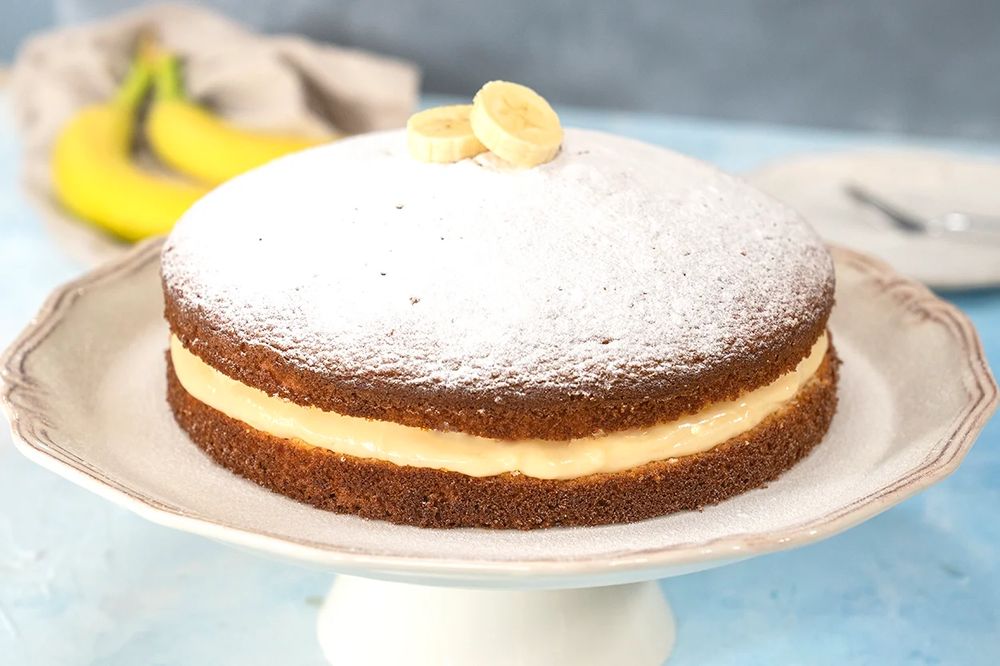
Tarifin sahibi Ege Şahin
Pastane vitrinlerinden eksik olmayan, o çok sevdiğimiz Alman pastasının
hazırlamak için mayalı hamur yapmak bazen zaman alıcı olabiliyor.
Fazla yorulmadan kolay pasta yapmak isteyenler, sizi pratik Alman pastası
tarifimize alalım. Yapılışı oldukça kolay ve aynı zamanda ekonomik bir pasta olduğu
için herkesin çok seveceğine eminiz. Puf puf kabarmış kekinin arasında yumuşacık
kreması ile damağınız şenlenecek, bir dilim daha isteyeceksiniz.
Pratik Alman Pastası İçin Malzemeler
- Keki İçin
- 3 adet yumurta
- 1 su bardağı toz şeker
- 1 çay bardağı (1 parmak eksik) sıvı yağ
- 1 çay bardağı (1 parmak eksik) süt
- 1 yemek kaşığı (tepeleme) yoğurt
- 1 paket kabartma tozu
- 1 paket vanilin
- 2 su bardağı un
- Kreması İçin
- 2,5 su bardağı süt
- 1/2 su bardağı toz şeker
- 3 adet yumurta sarısı
- 2 yemek kaşığı un
- 2 yemek kaşığı mısır nişastası
- 1 paket vanilin
- 1 tatlı kaşığı tereyağı
- İç Malzemesi İçin
- 2 adet orta boy muz (arzuya göre)
- Üzeri İçin
- 1 yemek kaşığı pudra şekeri
- 2 dilim muz
Pratik Alman Pastası Nasıl Yapılır?
Keki İçin
- Derin bir kapta yumurta ve toz şekeri beyazlaşana kadar çırpın.
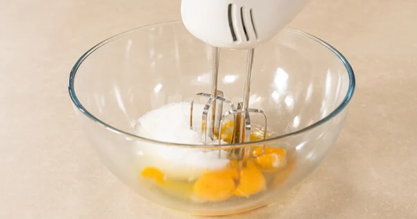
- Ardından sıvı yağı ekleyin.
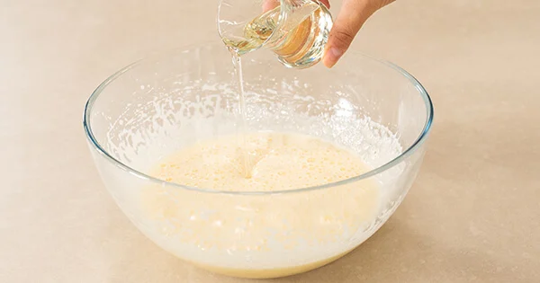
- Sütü ekleyin.
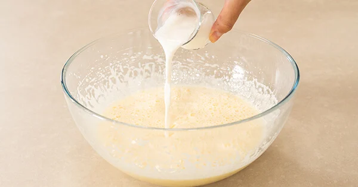
- Yoğurdu ekleyin ve tekrar çırpın.
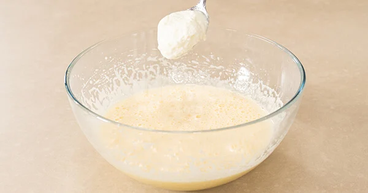
- Son olarak vanilin, kabartma tozu ve unu eleyerek ekleyin ve 2 dakika kadar çırpın. Homojen bir kek harcı elde ettiğinizde hazır olacak.
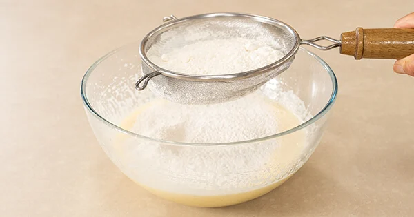
- Kelepçeli ve yuvarlak kek, orta boy kalıbını yağlayın. Kek harcını dökün.
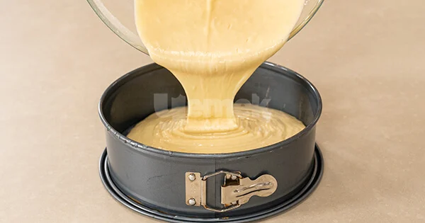
- Önceden ısıtılmış 180 derece fırında 35 dakika kontrollü olarak pişirin. Pişen keki tezgahta soğumaya bırakın.
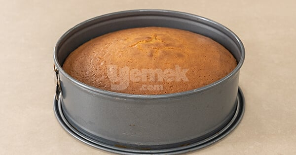
Kreması İçin
- Muhallebisi için yumurta sarısı, un, mısır nişastası ve vanilini derin bir kasede tel çırpıcı ile karıştırın.
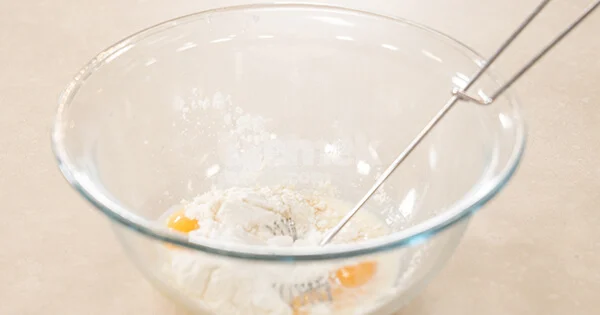
- Tencereye toz şeker ve sütü koyup kaynamaya bırakın. Kaynadıktan sonra yumurtalı karışıma bir kepçe dökün ve hızlıca karıştırın. Ardından yumurtalı karışımın tamamını tencereye dökün ve karışımı sürekli karıştırarak koyulaşıncaya kadar pişirin.
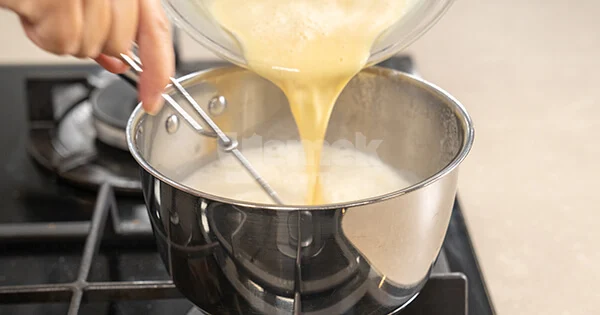
- Piştikten sonra ocaktan almadan önce tereyağını ekleyin ve karıştırın.
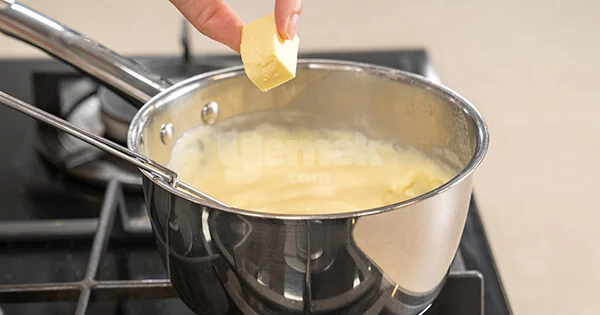
- Üzerini streç film ile kapatıp oda sıcaklığında soğumaya bırakın.
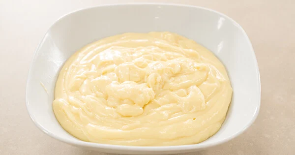
Pratik Alman Pastası İçin
- Soğuyan keki enlemesine ortadan ikiye kesin. Kekin alt tabanını bir servis tabağına yerleştirin ve kremanın tamamını ekleyip güzelce yayın.
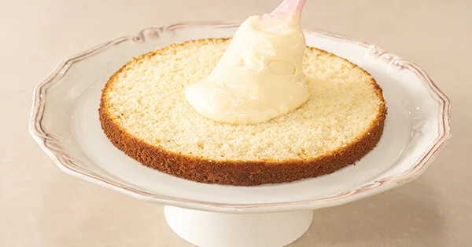
- Muz dilimlerini ekleyin.
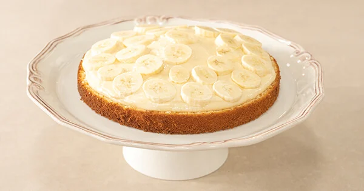
- Kekin diğer yarısını üzerine kapatın ve buzdolabında en az 1 saat dinlenmeye bırakın.
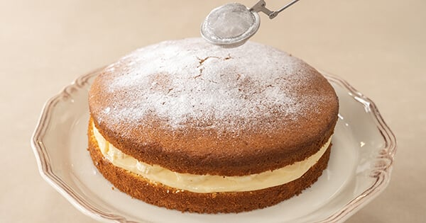
- Servis öncesinde pastanın üzerine pudra şekeri serpin. Arzuya göre üzerini muz dilimleri ile süsleyebilirsiniz. Afiyet olsun!
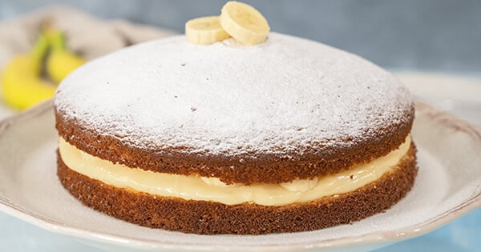
Pratik Alman Pastası Tarifinin Servis Önerisi
Arzuya göre pastanın içine muz dilimleri yerine çilek dilimleri ekleyebilir ya da sade kremalı olarak da hazırlayabilirsiniz.